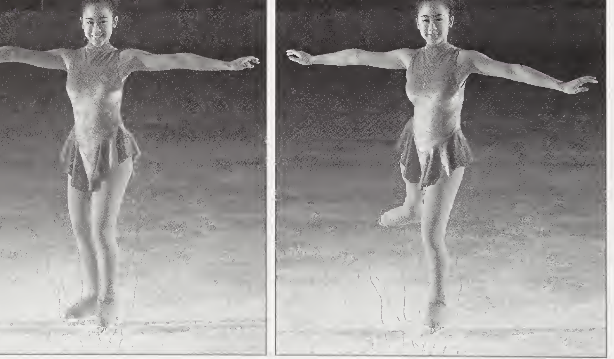

Forward Sculling (Swizzle)
BeginnerArms extended out to the sides for balance, knees bent; weight slightly back of centre on the blades — the balance for all forward skating.
Start with feet together in a V, toes pointed out. Push the feet forward and out to the sides until they're parallel, slightly more than shoulder-width apart; then straighten the knees and pull the feet back together, toes pointing in, until side by side. Repeat — out, then in — until it flows. (The diagram shows the start position at the bottom of the lemon-shaped track.)
The inside edge of each foot presses into the ice to drive the push out.
Tips
- Neither foot ever leaves the ice — it's a pump step, and it works forward or backward.
- Be patient: finding just the right amount of pressure turns it into a graceful, effortless glide.
Forward Glides · Basic Stroking
Beginner
Balanced over both feet for the two-foot glide, weight slightly back of centre. Start near the boards until confidence grows and the barrier is no longer needed.
Begin parallel, about shoulder-width apart. Bend both knees; one foot (the book uses the right) rotates out to nearly 45° and presses against the ice, pushing with the entire blade; your weight transfers to the other foot, which glides forward on one foot. Bring the feet back together and repeat on the other side.
The pushing foot drives with the whole blade; the gliding foot runs flat and straight.
Tips
- Aim to glide a distance of about three times your height on one foot.
- Repeating the push on the same foot is the one-footed pump step; alternate feet to travel across the ice.
- Practice until the push-and-glide becomes one smooth, continuous motion.
Advanced Forward Stroking
IntermediateUpper body straight, back erect. A deeper knee and ankle bend before each stroke lengthens it — that bend is where the extra power and speed come from.
Begin with feet together. Ankle and knee bend forward; the push-off leg straightens and presses the ice, propelling the skating foot forward. The push-off foot then leaves the ice and stretches fully behind the skating foot, knee turned out, toe pointed. Finally the free leg lowers beside the skating foot, both knees bent — and the stroke repeats on the other side.
Push from the inside edge — never the toe pick. The middle to the ball of the foot presses on the blade.
Tips
- The whole stroke in three words: bend, extension, stretch.
- Strength drill (wall sits): back against a wall, feet 12–18 inches out, toes forward; slide down slowly until your thighs are perpendicular to the wall; hold 30 seconds. Best done supervised.
Power Stroking
AdvancedStroking posture driven explosively — the knee and ankle snap into every push.
Alternating full strokes, accelerating in as few pushes as possible.
Explosive push and pressure — feel the skating blade press into the ice and push away from it.
Tips
- It's more than pushing quickly: it's explosive acceleration — top speed in the shortest time.
- Drill: stand on a hockey blue line; on a signal, accelerate to the red line. Your time should drop as the stroke gets stronger.
Backward Sculling (Swizzle)
BeginnerArms stretched out to the sides, knees bent; weight slightly forward of centre on the blades — the balance for all backward skating.
Start with feet together, toes pointed in and heels out — the mirror image of forward sculling. Press the feet back and out to the sides until parallel, slightly more than shoulder-width apart; then straighten the knees and pull the feet back together until side by side. Repeat the push–pull pattern until it flows. (In the diagram you're at the top of the lemon; the red arrow points backward — your direction of travel.)
The inside edge of each foot presses to push the feet apart.
Tips
- In-place drill: stand with your feet under your body and twist the toes in and out to learn the foot and ankle action; then add knee bend and a little momentum.
- Keep practicing to find the pressure that moves you backward without getting stuck.
Backward Glides
Beginner–IntermediateWeight balanced forward over the ball of the foot — not onto the toes. Begin near the barrier, like forward skating.
Start with short backward steps, toes pointed in and heels turned out — the backward "duck walk." Then glide backward on two feet held close together; once that's solid, lift one foot (the free foot) and glide on the other (the skating foot).
Both blades flat for the two-foot glide, weight slightly forward of centre.
Tips
- Practice the one-foot glide on both feet, aiming for about three times your height.
- Warm-up: the backward wiggle — a hula-hoop action while standing on both feet.
The Snake (Backward Wiggle)
Bonus · BeginnerOnly a teaching tip in the book — fleshed out from Learn to Skate–style curricula, where the backward wiggle is the classic first backward movement.
Knees bent, chest up, arms out to the sides. Balance on the balls of your feet — the backward-skating balance — and let your hips sway side to side, against your shoulders.
Feet together and parallel, both staying on the ice the whole time. Shift your weight from one foot to the other, pressing out a little with each foot in turn; each small press nudges you backward, and your path weaves like a snake.
Both blades stay down, weight over the balls of the feet; each foot presses out in turn as the weight lands on it.
Tips
- The book slips this into a Teaching Tip under Backward Glides: tots pretend to be bunnies wiggling through the carrot patch; adults are told to think “hula hoop.”
- In the Taiwan association’s beginner progression it’s called the snake (蛇行), the step right after the backward duck walk.
- Glance over your shoulder before you start — you’re travelling where you can’t see.
- Wiggling but going nowhere? Walk backward slowly with your toes turned in to feel the momentum, then go back to wiggling.
Advanced Backward Skating
IntermediateWeight stays forward; the free toe points down; look over one shoulder in the direction you're travelling — head up, never facing down.
Push from one foot onto the other (the book: the right foot pushes, you glide on the left). The pushing foot rises just above the ice; the skating knee starts slightly bent and straightens slowly as the free foot comes back beside it. Repeat to the other side. (In the diagram, the dashed boot is the free foot hovering.)
The push and the glide both run on the skating foot; the free foot stays just off the ice.
Tips
- Balance is the whole game: lean too far back and you'll fall; too far forward and the glide stops dead.
All seven skills at a glance
| Skill | Feet pattern | Weight on blade | Power source | Direction |
|---|---|---|---|---|
| Forward sculling (swizzle) | V → wide → together, repeat | Slightly back of centre | Inside-edge push out, pull in | Forward |
| Forward glides / stroking | Push at ~45°, glide on the other foot | Slightly back of centre | Whole-blade push | Forward |
| Advanced forward stroking | Together → push → free leg stretched behind | Slightly back of centre | Inside-edge push, deep bend | Forward |
| Power stroking | Same strokes, explosive | Slightly back of centre | Knee-and-ankle snap | Forward |
| Backward sculling (swizzle) | Toes-in start → back & out → together | Slightly forward of centre | Inside-edge push | Backward |
| Backward glides | Duck walk → two-foot → one-foot glide | Forward, over the ball of the foot | Short steps, then coast | Backward |
| Advanced backward skating | Push across, free foot hovers | Forward | Alternating backward strokes | Backward |
| Snake / backward wiggle (bonus) | Feet together, weight shifts side to side | Slightly forward, over the balls of the feet | Side-to-side presses + hip sway | Backward |